Abstract
Large Language Models (LLMs) encode factual knowledge within hidden parametric spaces that are difficult to inspect or control. While Sparse Autoencoders (SAEs) can decompose hidden activations into more fine-grained, interpretable features, they often struggle to reliably align these features with human-defined concepts, resulting in entangled and distributed feature representations.
To address this, we introduce AlignSAE, a method that aligns SAE features with a predefined ontology through a "pre-train, then post-train" curriculum. After an initial unsupervised training phase, we apply supervised post-training to bind specific concepts to dedicated latent slots while preserving the remaining capacity for general reconstruction. This separation creates an interpretable interface where specific concepts can be inspected and controlled without interference from unrelated features.
Empirical results demonstrate that AlignSAE enables precise causal interventions, such as reliable "concept swaps", by targeting single, semantically aligned slots, and further supports multi-hop reasoning and a mechanistic probe of grokking-like generalization dynamics.
Key Contributions
🎯 Concept-Aligned Features
Post-training supervision binds each ontology concept to a dedicated SAE slot, creating a one-to-one mapping that is easy to find, interpret, and control.
🔄 Causal Interventions
Enables precise "concept swaps" by targeting single slots, achieving 85% swap success at moderate amplification (α≈2) in mid-layers.
🧩 Multi-Hop Reasoning
Step-wise concept binding supports compositional reasoning, with 4× higher swap success than traditional SAEs in 2-hop tasks.
🔬 Grokking Analysis
Reveals how concept representations transition from diffuse to diagonal during grokking, providing mechanistic insights into generalization.
📊 Slide Show
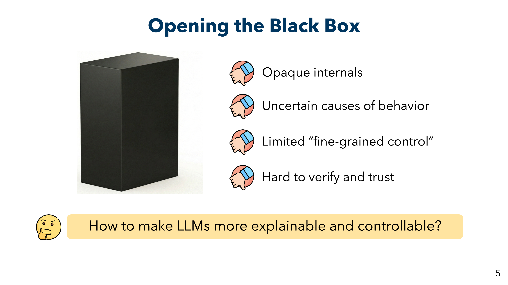
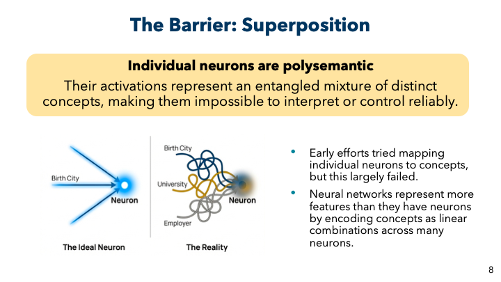
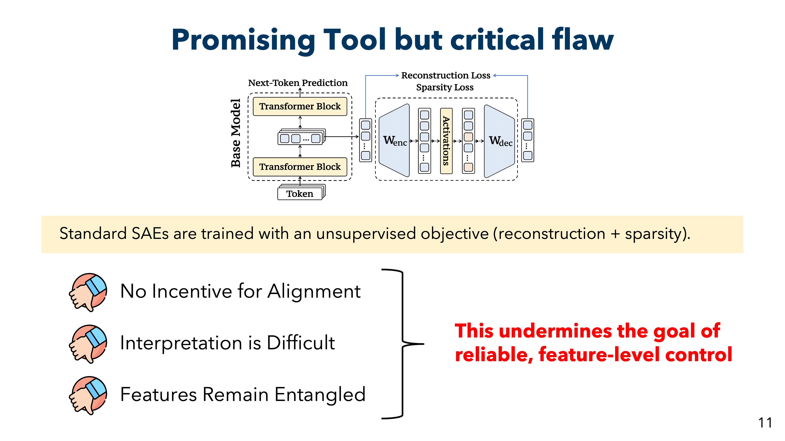
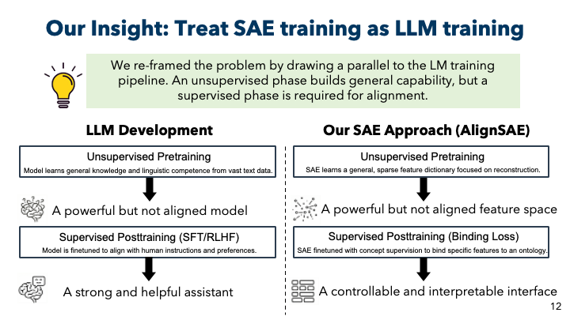
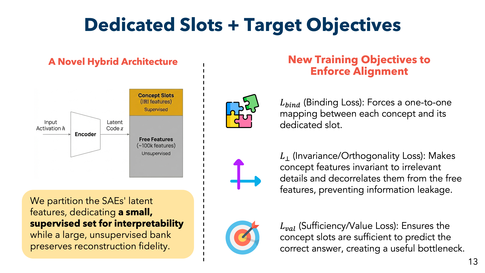
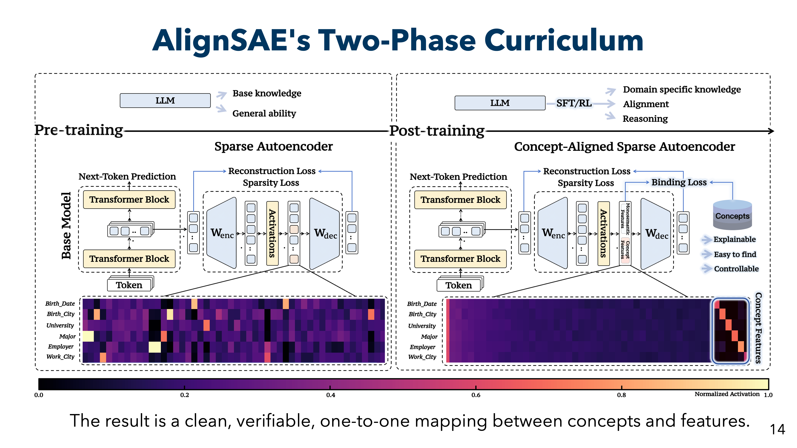
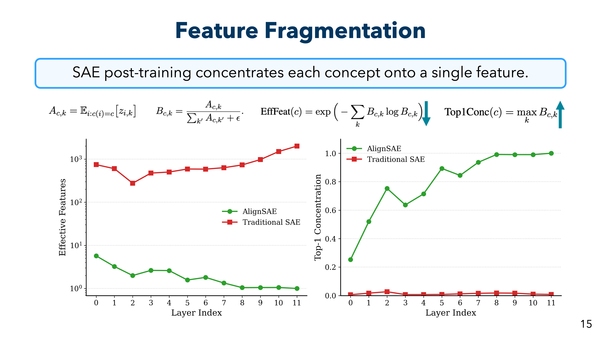
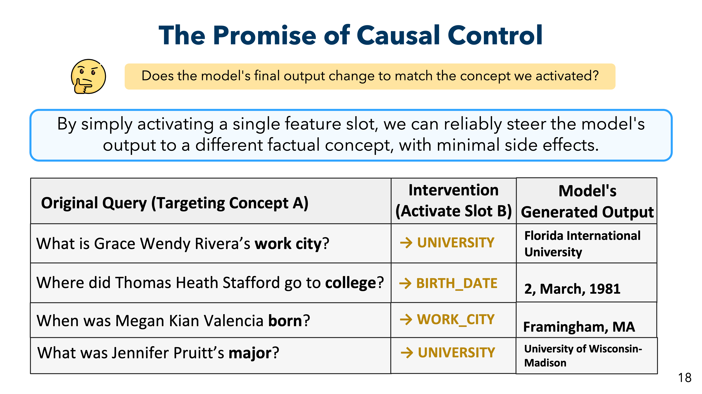
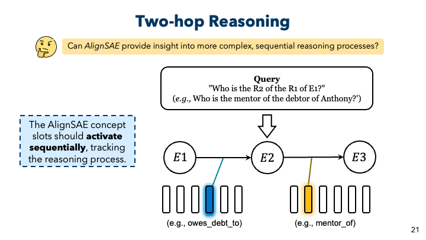
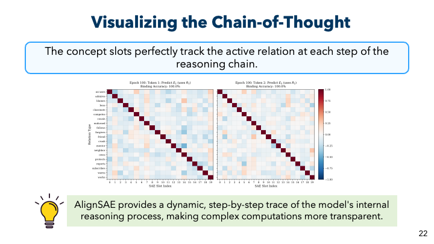
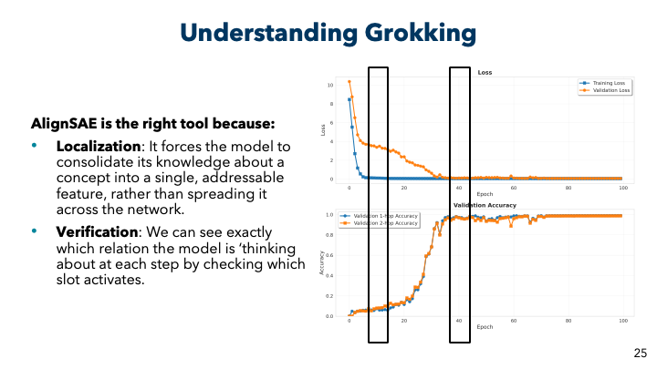
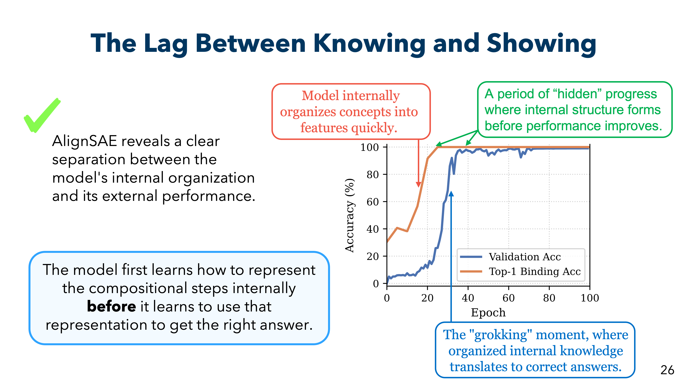
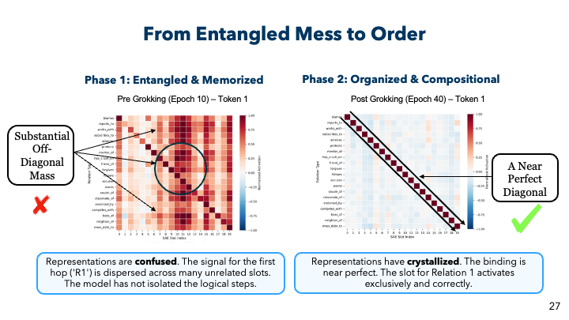
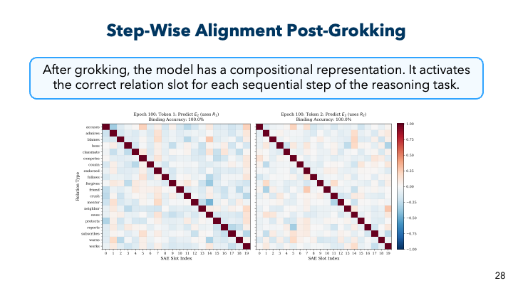
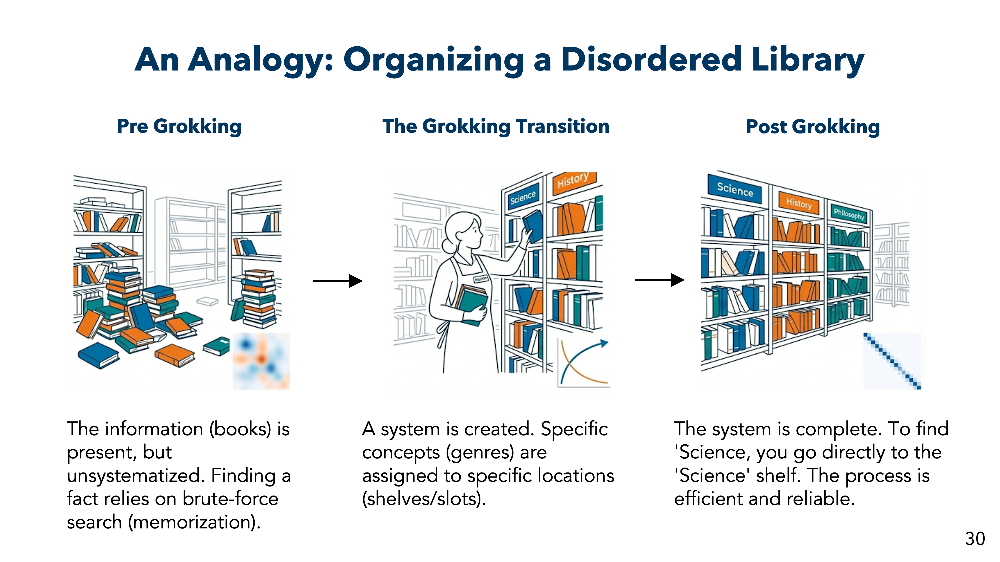
Method
Two-Stage Training Curriculum
AlignSAE follows a "pre-train, then post-train" curriculum inspired by LLM training pipelines:
- Pre-training (Stage 1): The SAE is trained on reconstruction and sparsity losses, allowing the decoder to form a high-capacity dictionary of features.
- Post-training (Stage 2): We add supervised losses to bind specific concepts to dedicated slots while keeping the majority of features free for general reconstruction.
Multi-Objective Loss Function
Our training objective augments the standard SAE loss with three additional components:
$$\mathcal{L} = \mathcal{L}_{\text{SAE}} + \lambda_{\text{bind}}\mathcal{L}_{\text{bind}} + \lambda_{\perp}\mathcal{L}_{\perp} + \lambda_{\text{val}}\mathcal{L}_{\text{val}}$$
1. Standard SAE Loss:
$$\mathcal{L}_{\text{SAE}} = \lambda_{\text{rec}}\|\mathbf{h} - \hat{\mathbf{h}}\|^2 + \lambda_{\text{sp}}\|\mathbf{z}\|_1$$
where $\mathbf{h} \in \mathbb{R}^d$ is the original activation and $\hat{\mathbf{h}} = \mathbf{W}_{\text{dec}}\mathbf{z}$ is the reconstruction
2. Concept Binding Loss:
$$\mathcal{L}_{\text{bind}} = \text{CE}\left(\text{softmax}(\mathbf{z}_{\text{concept}}), y_{\text{rel}}\right)$$
Cross-entropy loss that assigns each relation $r \in \mathcal{R}$ to a dedicated concept slot
3. Orthogonality Loss:
$$\mathcal{L}_{\perp} = \left\|\text{corr}(\mathbf{z}_{\text{concept}}, \mathbf{z}_{\text{rest}})\right\|_F^2$$
Decorrelation penalty to reduce concept leakage into free features
4. Value Prediction Loss:
$$\mathcal{L}_{\text{val}} = \text{CE}\left(\text{softmax}(\mathcal{V}(\mathbf{z}_{\text{concept}})), y_{\text{ans}}\right)$$
Ensures concept slots are task-informative for answer prediction
Architecture
We attach the SAE to a frozen GPT-2 model and extract activations from intermediate layers. The SAE has:
- 100,000 free slots for unsupervised feature learning
- |R| concept slots (one per ontology concept) for supervised alignment
- Lightweight value heads for diagnostic validation of slot informativeness
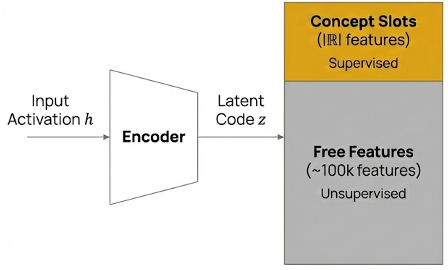
Input activation $h$ is encoded into latent code $z$, split into supervised Concept Slots and unsupervised Free Features
Experimental Setup
1-Hop Factual Recall
We evaluate on a biography QA task with 6 relations: BIRTH_DATE, BIRTH_CITY, UNIVERSITY, MAJOR, EMPLOYER, WORK_CITY.
- 1,000 synthetic person profiles
- 4 question templates per relation (2 train, 2 test)
- Evaluation on unseen paraphrase templates
2-Hop Compositional Reasoning
We extend to multi-hop reasoning with 20 relations over 60 entities. Each query requires inferring: e1 →r1 e2 →r2 e3
- 8,000 question-answer pairs
- Step-wise supervision at each hop
- 4× higher swap success than traditional SAEs
BibTeX
@article{yang2026alignsae,
title={AlignSAE: Concept-Aligned Sparse Autoencoders},
author={Minglai Yang and Xinyu Guo and Zhengliang Shi and Jinhe Bi and Steven Bethard and Mihai Surdeanu and Liangming Pan},
journal={Transactions on Machine Learning Research},
year={2026},
url={https://openreview.net/forum?id=I9UjKxW4nq}
}